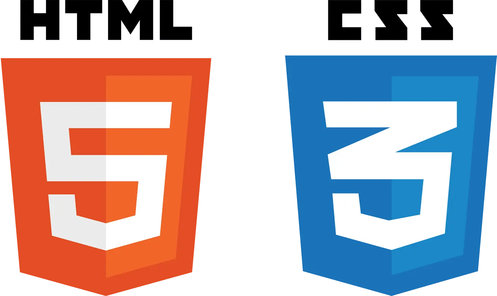
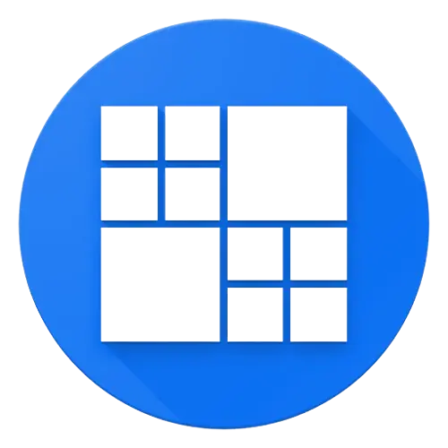
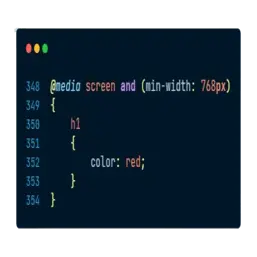

HTML & CSS
Helt til at starte med blev vi introduceret til HTML, som er det sprog, der bruges til at
strukturere enhver hjemmeside.
Vi lærte om, hvad elementer/tags er og lidt om de mest basale såsom
<h1></h1>-<h6></h6>,
<p></p>
og <a></a>.
Så lærte vi om det basale CSS som at tilgå elementer via klasse ved brug af ".",
id'er ved brug af "#" og ganske enkelt direkte via elementets navn.
Lidt efter i forløbet blev vi introduceret til Flexbox, som er en af de to primære
layoutmodeller i CSS, som vi skulle bruge til at lave en lille visitkortøvelse med.


Grid og Media Queries
Det næste, vi skulle lære om, var grid og media queries. Grid er den anden primære
layoutmodel i CSS. Grid adskiller sig ved Flexbox på den måde, at det udover at lave
endimensionelle layouts og så fungerer til de todimensionelle. Vi skulle bruge grid til at
lave nogle små øvelser til at starte med, og ved disse øvelser blev vi også introduceret til
media queries.
Media queries er det, der bruges til at gøre et hjemmeside responsiv, så den passer til alle
skærmstørrelser.
Da vi arbejder mobile first, lærte vi, at vi skal bruge
min-width i vores media queries således, at vores layouts i første
omgang er mobilvenlige og dernæst tablet og desktop.
Disse ting, udover det basale HTML og CSS samt Flexbox, var også nogle af elementerne, der
skulle indgå i studiestartsprøven.